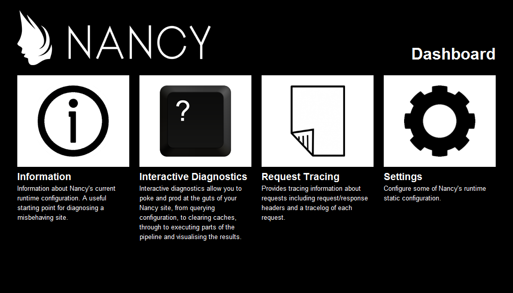

Developing web applications using Nancy
What is Nancy?
Nancy is a lightweight, low-ceremony, framework for building HTTP based services
The goal of the framework is to stay out of the way as much as possible and provide a super-duper-happy-path to all interactions
Open source, built on the most liberal software license around; MIT
Built by the community, for the community!
What makes Nancy different?
Same goal, different approaches
There are several frameworks availble for building HTTP based services, such as FubuMVC, OpenRasta and the ASP.NET stack
But...
I wouldn't be here if I didn't think Nancy has something unique to bring to the game!
Syntax, more to it than meets the eye
We put a lot of effort into creating a great API
public class Home : NancyModule
{
public Home(IItemRepository repository)
{
Get["/"] = parameters => {
return View["index"];
};
Get["/item/{slug}"] = parameters => {
var item = repository.Get(parameters.slug);
return Response.AsJson(item);
};
}
}
Code is structured in modules
public class Home : NancyModule
{
public Home()
{
}
}
You can have as many modules as you like, they will help structure your code
Explicit declaration of resource access
Get["/"] = parameters => {
...
};
Delete["/"] = parameters => {
...
};
Put["/"] = parameters => {
...
};
Nancy is designed to handle DELETE, GET, HEAD, OPTIONS, POST, PUT and PATCH requests
Dynamics is a star
Get["/article/{id}"] = parameters => {
// Captures route parameters
var parameterId = parameters.id;
// Includes query string values
var queryId = Request.Query.id;
// Posted form values
var formId = Request.Form.id;
};
Implicit casting keeps the code clean
Get["/"] = parameters => {
return new Response();
};
Get["/"] = parameters => {
return "Hello";
};
Get["/"] = parameters => {
return 418;
};
Get["/"] = parameters => {
return HttpStatusCode.ImATeapot;
};
Nifty helpers for creating responses
Get["/"] = parameters => {
return Response.AsJson(....);
};
Get["/"] = parameters => {
return Response.AsStream(....);
};
Get["/"] = parameters => {
return Response.AsFile(....);
};
There are a lot more, and like everything else in Nancy, it's completely extensible. Go nuts!
And so on, and so on, and so on....
...and on and on and on...
Tiny, yet very extensible, core
Lightweight is more than a just a buzzword
Embracing Nuget as an extensibility mechanism
PM> install-package Nancy.*
30 Nancy packages are available today - created by both the team and the community!
Hosting never was easier
Runs on both .NET and Mono
Harness the powers of Windows, Linux and OSX!
Built to run anywhere!
Several hosting options out of the box
PM> install-package Nancy.Hosting.Aspnet
PM> install-package Nancy.Hosting.OWIN
PM> install-package Nancy.Hosting.Self
PM> install-package Nancy.Hosting.WCF
Creating a new host all comes down to mapping between requests and responses
Conventions over Configuration
It is really all about doing more with less code
View location conventions
When you render a view, Nancy will use conventions to figure out which view you are rendering
(viewName, model, context) => {
return string.Concat("views/", viewName);
}
(viewName, model, context) => {
return string.Concat("views/",
context.ModuleName, "/", viewName);
}
It's really just a function with the following signature
Func<string, dynamic, ViewLocationContext, string>
Static content conventions
Structuring static content in an application is almost a religious thing for developers
(context, applicationRootPath) => {
// Inspect the incoming request and determin if a
// file should be returned or if Nancy should
// continue processing the request
}
It's really just a function with the following signature
Func<NancyContext, string, Response>
Write your own, or use the built in helpers to create powerful conventions with hardly any code
Dependency Injection
It's part of the experience, not an extension
The bootstrapper composes Nancy at runtime
At the heart there is a bootstrapper, which is much like a magical unicorn
Magic resolution of Module dependencies
public class Home : NancyModule
{
public Home(IDependency dependency)
{
// The dependency will automatically be resolved at run-time
}
}
Supports all the major containers
Literally, as easy as installing a Nuget
PM> install-package Nancy.Bootstrapper.Autofac
PM> install-package Nancy.Bootstrapper.Ninject
PM> install-package Nancy.Bootstrapper.StructureMap
PM> install-package Nancy.Bootstrapper.Unity
PM> install-package Nancy.Bootstrapper.Windsor
It's no container abstraction, you get access to the full API of each container
Pipelines makes extensibility a breeze
Application-level pipeline for cross-cutting concerns
We make heavy us of the application pipeline to add functionality to Nancy. Things like
caching, static content, security and throttling are easy to
hook up using the pipeline
Module-level pipelines for narrower concerns
You get the opportunity to run code, on a module level, both before and after a route is invoked
Before += (context) => {
// Short-circut the Request by returning a Response or
// null to continue processing the request in the Module
}
After += (context) => {
// Gives you the opportunity to modify a Response before it
// is returned to the client
}
View engines
There is a flavour for everyone!
Comes with a built in engine called SuperSimpleViewEngine, but of course there is more...
PM> install-package Nancy.ViewEngines.DotLiquid
PM> install-package Nancy.ViewEngines.NDjango
PM> install-package Nancy.ViewEngines.NHaml
PM> install-package Nancy.ViewEngines.Nustache
PM> install-package Nancy.ViewEngines.Spark
PM> install-package Nancy.ViewEngines.Razor
As with everything else in Nancy, just install a Nuget and Nancy will automatically wire it up for you.
If you are looking for WebForms...yeah.. just don't, ok?
Rendering a view couldn't be easier
public class Home : NancyModule
{
public Home()
{
Get["/"] = parameters => {
return View["index"];
};
}
}
View locations are convention based and there are several default conventions defined. It is easy to
configure your own!
Testing
Testing should be easy
The moment testing becomes a tedious chore, you are more likely to start convincing yourself you'll do it later. You won't.
Test helpers
We've built a lightweight framework for testing Nancy applications
PM> install-package Nancy.Testing
Of course it's a Nuget, what did you think?
Testing
Enough talk! Show me the codez!
public void Should_test_something()
{
// Given
var bootstrapper = new ConfigurableBootstrapper(with => {
with.Module<Home>();
});
var browser = new Browser(bootstrapper);
// When
var result = browser.Get("/", with => {
with.HttpRequest();
with.FormValue("name", "Nancy");
});
// Then
Assert.Equal(result.StatusCode, HttpStatusCode.Ok);
} Powerful result object
Making sure the right stuff is happening, easy
response.Body["#errorBox"]
.ShouldExistOnce()
.And.ShouldBeOfClass("floatingError")
.And.ShouldContain(
"invalid",
StringComparison.InvariantCultureIgnoreCase);
And, of course, it's extensible!
Diagnostics
Doctor, am I dying?
Runtime diagnostics capabilities, built straight into the framework itself

Request tracing
There's nothing wrong with spying on your request every now and then!
Interactive diagnostics
Query your application at runtime
public class ServerTime : IDiagnosticsProvider
{
public string Name { get { return "ServerTime"; } }
public string Description
{
get { return "The current server time"; }
}
public object DiagnosticsObject { get { return this; } }
public DateTime GetCurrentTime()
{
return DateTime.Now;
}
}
Codez!
Thank you!
Visit nancyfx.org for the full shizzle - source code, documentation, user group and more!
-

Andreas 'thecodejunkie' Håkansson!
- » TheCodeJunkie on Twitter and GitHub
-

Steven 'grumpydev' Robbins!
- » Grumpydev on Twitter and GitHub